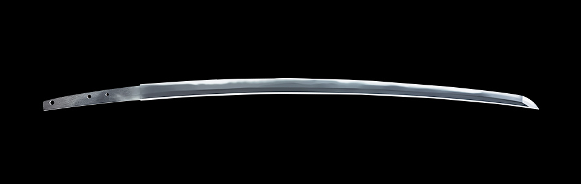
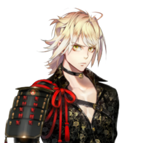

刀

「南泉一文字」（なんせんいちもんじ）は、備前国（現在の岡山県）で興隆した刀工一派「福岡一文字派」（ふくおかいちもんじは）の作品。号の由来は、研ぎ出した本刀剣にぶつかった猫が真二つに切れたことから、中国の故事「南泉斬猫」（なんせんざんみょう）に因んで付けられました。
本刀剣は大磨上のため、無銘。姿は、鎬造りで庵棟、反りは浅く、中鋒／中切先のもの。小板目肌がよく詰み、乱れ映り立つ鍛えは素晴らしく、匂口がやわらかに冴えており、福岡一文字派の代表作とも言える名刀です。刃文は大丁子に互の目が交じり、足・葉の働きがしきりに入って、ここにも同刀派の特色がよく現れています。
キャラクター

福岡一文字派作、大磨上無銘の打刀。触れた猫が真っ二つに斬れたという逸話と、故事『南泉斬猫』を掛けてこの名がついたとされる。本来であれば、自分はもっと背が高く泣く子も黙る恐るべき刀剣男士のはず……全ては猫の呪いのせい。と主張する。